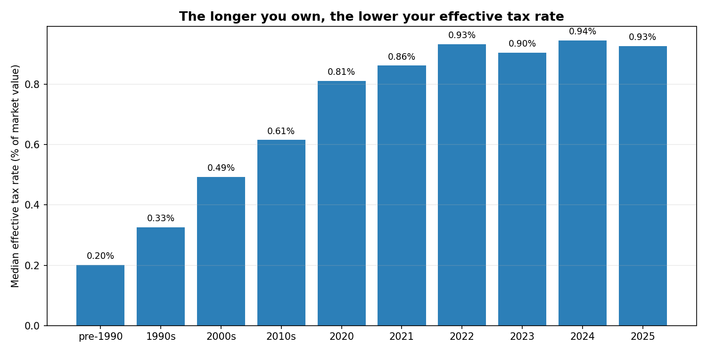
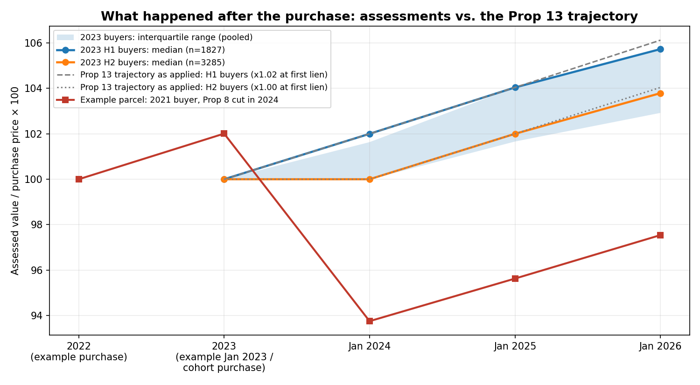
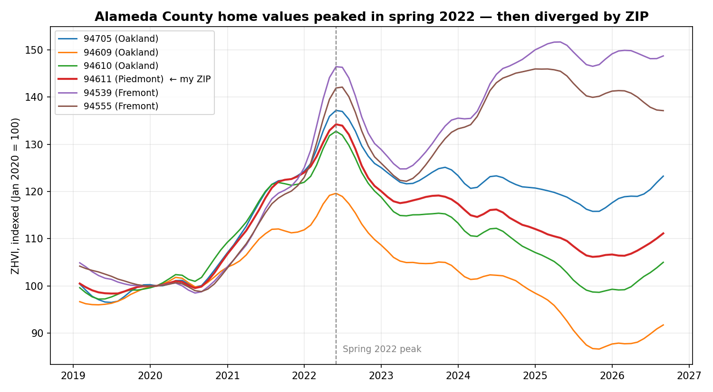

On Property Taxes
TL;DR: In August I appealed my property tax assessment after concluding the county's number was roughly 11% above what my home is worth. To see how widespread the problem was, I analyzed every parcel and sale in Alameda County, and found it everywhere: recent buyers pay more than four times the effective tax rate of longtime owners, and buyers from the 2021–2023 peak are being taxed on value the market took away. Proposition 13 was designed to protect longtime homeowners, and the data confirms it does, but the side effects go further than the design: newcomers foot the bill, the county's yearly 2% assessment increases ignore market downturns, and the relief valve for falling home values is years late and only works if you know to ask for it.
Where this started
In August 2026 I filed a property tax appeal on my Oakland home. The county's 2026–27 assessment came in roughly 11% above what I believed the home was worth, a six-figure gap. The assessor's informal review denied me in September.
I didn't set out to write about tax policy. I set out to check whether my number was right. But the deeper I got into the county's own data, every parcel, every sale, every tax rate area, the more I realized my appeal was one instance of something much bigger. This is what I found.
The claim
California's Proposition 13 was written to protect homeowners from runaway property taxes. Nearly fifty years later, it does something its authors never intended: it runs a two-sided distortion. Longtime owners are taxed on a sliver of their homes' value, while buyers from the 2021–2023 peak are taxed on value that no longer exists. Two identical houses on the same street can carry tax bills that differ by a factor of four, determined mostly by when each owner bought, and partly by where.
The analysis
Insight 1: longtime owners are protected. The shield works. Take two identical houses on the same street. One was bought decades ago, the other last year. The longtime owner pays tax at about 0.2% of the home's value each year; the new buyer pays about 0.94%, nearly five times more. That gap, compounding at 2% a year for decades, is exactly what Proposition 13 was built to create: people who bought long ago are not taxed on gains they never cashed out.

Insight 2: peak buyers are paying tax on value that no longer exists. Homes bought in 2023, near the top of the market, are assessed about $42,000 (3.5%) above what comparable homes actually sold for in 2024 and 2025. More than one in five of those buyers is assessed below what they paid for the house. The county's 2%-a-year escalator kept climbing while the market fell, and assessments never came back down on their own. That $42,000 is an estimate with real uncertainty around it: the data supports the direction better than the precise size.

Insight 3: the relief exists, but it is late and you have to find it yourself. California does have a fix for this: Proposition 8 lets the assessor cut your assessment when your home's value falls. Tracing 2023 buyers through seven years of tax rolls, about 22% got such a cut. But barely 2% had relief through 2025; most of it arrived in 2026, years after prices peaked in 2022. The assessor does not come looking. Nearly eight in ten peak buyers are still being taxed on the full trajectory, and nothing in the process tells them they can ask for a reduction.
Insight 4: where you live matters as much as when you bought. The market didn't fall evenly. Some neighborhoods dropped 15% from 2023 to 2025 while others rose 11%. So the over-assessment is concentrated where prices fell hardest: hillside neighborhoods are more than 20% over-assessed, while 2023 buyers in parts of the Tri-Valley are still under-assessed. Same county, same law, wildly different bills, depending on your neighborhood's luck in the market.

My appeal, in context. My home's trajectory tells the story in miniature: bought in 2021, assessed upward at 2% a year, until the assessor cut it by 8% on its own in 2024, no appeal filed. The office's own records concede the premise: the market fell below the trajectory. My appeal argues it fell further than that cut acknowledged.
Did it work? The intent, and what the data says
In the mid-1970s, Bay Area home values were exploding and assessments with them: the LA County assessor warned of 100% valuation jumps in a single year. Homeowners, especially elderly ones on fixed incomes, faced being taxed out of houses they'd owned for decades: a tax on unrealized gains they had no cash to pay. Proposition 13 (June 1978, passed roughly 2-to-1) answered with three things: a 1% rate cap, a 2%-per-year cap on assessment growth, and an acquisition-value system: your assessment is your purchase price until you sell. The courts upheld it as fairer than what came before; the U.S. Supreme Court (1992) found a legitimate state interest in neighborhood stability, with Justice Blackmun writing that new buyers "don't require the same protection" as longtime owners.
And on its own terms, the data says it worked. A buyer from before 1990 pays a median effective rate of 0.20%, roughly one-sixth of the statutory 1.17%, and less than a quarter of what a 2024 buyer pays. The 3.5x assessment gradient between 31+ year owners and recent buyers is the shield doing exactly what it was designed to do: people who bought decades ago are not being taxed out of their homes on unrealized gains. Blackmun's neighborhood-stability interest is right there in the numbers.
The analysis above already showed the three mechanical consequences: the escalator keeps rising through downturns, the relief arrives years late and only for those who ask, and the burden varies by neighborhood. The deeper second-order effect is about who pays for the shield.
The protection is funded by whoever bought last. The flip side of a 0.20% rate for longtime owners is a 0.94% rate for 2024 buyers: more than four times the effective rate on an equivalent home. Nothing in 1978 contemplated the shield's cost being levied this unevenly on newcomers. And here is a hypothesis worth stating plainly: the arrangement feeds on itself. The county's revenue growth depends on a steady stream of new buyers entering at high prices, and once prospective buyers understand they're paying a premium to subsidize everyone who bought before them, it starts to resemble a pyramid scheme. If enough of them bid less or stay out, the inflow slows, prices soften for every homeowner, and the county's own revenues feel the drag. To be clear, this is reasoning, not a measured result: forty-eight years of price growth happened under this system, so buyers have not balked in aggregate. But the margin risk is real, and it compounds over time.
Two more things a fair account has to include. First, the revenue stability Prop 13 creates is a feature counties depend on: predictable budgets are why no assessor is eager to see the base shrink. Second, the political economy: longtime owners vote at high rates, which is why the system persists no matter what the data says. Any fix has to survive both facts.
The intent was a shield. The data says the shield works, and that it now runs a tenure lottery on the side.
What the county should do
Three concrete, low-cost steps for the Assessor's office, sequenced cheapest first:
- Notify owners. When county records indicate a parcel's market value has likely fallen below its assessed value, tell the owner: a line on the tax bill, a letter, anything. Awareness is currently the whole ballgame, and this is the Monday-morning move.
- Proactive decline-in-value reviews. When a neighborhood's median sale prices fall, say, 5% or more below factored assessments for two consecutive quarters (a condition the office can detect from its own transfer records), initiate Prop 8 reviews instead of waiting for owners to discover the provision and file. The data to trigger this already exists inside the office.
- Publish an annual assessment-vs-market report by neighborhood. The county already publishes the raw ingredients; a short yearly synthesis would let every homeowner see where they stand without filing a public records request or building this analysis themselves.
The obvious objection: every one of these asks the assessor to do more work for less revenue. Why would the office agree? Because the alternative is worse. The duty is to enroll the lesser of factored base-year value or market value, not the larger; an appeal wave driven by analyses like this one costs more staff time than proactive reviews; and the Board of Supervisors answers to the same newcomers paying four times the rate. Getting ahead of it is the cheaper option.
None of this weakens Proposition 13. It finishes a job the law started in 1978: making sure people are taxed on what their homes are actually worth.
If you're a homeowner rather than the assessor, the Monday-morning version is simpler: pull recent sale prices in your neighborhood, compare them to your assessed value, and if the market has fallen below it, ask for a Prop 8 decline-in-value review. The process exists. Most people just never hear about it.